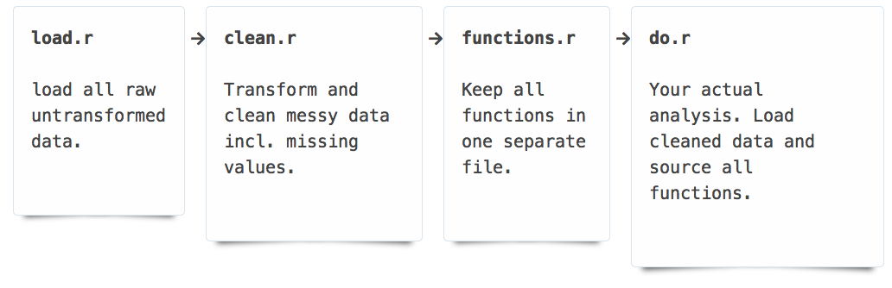

Raw data from various ecological studies can be poorly formatted and/or may lack appropriate details of the study. Correcting data in place can be a dangerous exercise since the original raw data would get overwritten and there would be no way to audit this process or recover from mistakes made during this time. A good data practice would be to maintain the original data, but use a programmatic script to clean it, fix mistakes and save that cleaned dataset for further analysis.

dat <- data.frame(males = c(injured = 4, uninjured = 2), females = c(injured = 1, uninjured = 5))
dat
## males females
## injured 4 1
## uninjured 2 5
Rowames as a column we can manipulate
dat <- cbind(dat, status = rownames(dat))
dat
## males females status
## injured 4 1 injured
## uninjured 2 5 uninjured
Get values out of columns, variables as columns:
library("reshape2")
dat <- melt(dat, "status")
Add some nice metadata that was absent before:
names(dat) <- c("status", "sex", "count")
dat
## status sex count
## 1 injured males 4
## 2 uninjured males 2
## 3 injured females 1
## 4 uninjured females 5
In the example below, we use a data file obtained as plain text and clean up incorrect spacing and separators. Then we look up the appropriate metadata
library("stringr")
# If you don't have this package simply run install.packages("stringr")
rawData <- readLines("data/messy_data.txt")
rawData
## [1] "J. Pritchard 01/12 - 12/11 1 1500 W 7.0 420 48 Migratory 3"
## [2] "E. Jones 02/18 - 04/21 4 1293 N 8.0 490 48 Resident 1"
## [3] "J. Pritchard 01/13 - 02/17 15 1028 N 4.0 46 460 Migratory"
## [4] "Matt Jones 09/23 - 11/23 23 563 N 3.0 470 47 Resident 2"
## [5] "S. Chamberlain 07/05 - 09/26 22 713 N 5.2 500 45 Resident 4"
## [6] "C. Boettiger 10/24 - 10/30 1495 S 30 1.9 47 410 Migratory"
# Count number of lines (make sure it's what you're expecting)
length(rawData)
## [1] 6
We've got two issues here. First, we need to split the dates into two separate fields. Next we need to remove the uneven spaces and split the remaining data into individual cells. We can write functions to accomplish both tasks.
# First we use a function in the stringr package to locate where the dashes are.
# Note that we are not just searching for the dash but a string that includes the space before and after.
dashes <- str_locate_all(rawData, " - ")
# Let's make sure it looks right
rawData[1]
## [1] "J. Pritchard 01/12 - 12/11 1 1500 W 7.0 420 48 Migratory 3"
dashes[1]
## [[1]]
## start end
## [1,] 22 24
# -----------------------------------------------
# A function to remove extra spaces and split the dates
# -------------------------------------------
splitByDate <- function(str, start, finish) {
beginning <- str_sub(str, 1, start - 6)
dates <- str_sub(str, start - 5, finish + 5)
end <- str_sub(str, finish + 6, str_length(str))
beginning <- str_trim(beginning)
dates <- str_split(dates, " - ")
while(str_detect(end, " ")) {
end <- str_replace_all(str_trim(end), " ", " ")
}
end <- str_split(end, " ")
return(c(unlist(beginning), unlist(dates), unlist(end)))
}
# A function to return a nicely formatted dataset
# -------------------------------------------
formatData <- function(rawD) {
longest_row <- max(sapply(rawD, length))
# If any rows have missing data, we pad it with NAs so we get a clean data.frame
results <- sapply(rawD, function(y) {
if(length(y) < longest_row)
c(y, rep(NA, longest_row - length(y)))
else
y
})
return(as.data.frame(t(results)))
}
first_pass <- sapply(1:length(rawData), function(x) {
splitByDate(rawData[x], dashes[[x]][1], dashes[[x]][2])
})
cleaned_data <- formatData(first_pass)
names(cleaned_data) <- c("observer", "date_first", "date_last", "id", "distance", "direction", "speed", "measurex", "measurey", "migratory_status", "times_observed")
# str is short for structure
str(cleaned_data)
## 'data.frame': 6 obs. of 11 variables:
## $ observer : chr "J. Pritchard" "E. Jones" "J. Pritchard" "Matt Jones" ...
## $ date_first : chr "01/12" "02/18" "01/13" "09/23" ...
## $ date_last : chr "12/11" "04/21" "02/17" "11/23" ...
## $ id : chr "1" "4" "15" "23" ...
## $ distance : chr "1500" "1293" "1028" "563" ...
## $ direction : chr "W" "N" "N" "N" ...
## $ speed : chr "7.0" "8.0" "4.0" "3.0" ...
## $ measurex : chr "420" "490" "46" "470" ...
## $ measurey : chr "48" "48" "460" "47" ...
## $ migratory_status: chr "Migratory" "Resident" "Migratory" "Resident" ...
## $ times_observed : chr "3" "1" NA "2" ...
cleaned_data$date_first
## [1] "01/12" "02/18" "01/13" "09/23" "07/05" "10/24"
# oops, we forgot to add the year. All these data were collected in 2012
cleaned_data$date_first <- paste0(cleaned_data$date_first, "/12")
cleaned_data$date_last <- paste0(cleaned_data$date_last, "/12")
# Now let's typecast these data as a Date class
cleaned_data$date_first <- as.Date(cleaned_data$date_first, "%m/%d/%y")
cleaned_data$date_last <- as.Date(cleaned_data$date_last, "%m/%d/%y")
We can examine the data to make sure everything looks ok.
head(cleaned_data)
## observer date_first date_last id distance direction speed
## 1 J. Pritchard 2012-01-12 2012-12-11 1 1500 W 7.0
## 2 E. Jones 2012-02-18 2012-04-21 4 1293 N 8.0
## 3 J. Pritchard 2012-01-13 2012-02-17 15 1028 N 4.0
## 4 Matt Jones 2012-09-23 2012-11-23 23 563 N 3.0
## 5 S. Chamberlain 2012-07-05 2012-09-26 22 713 N 5.2
## 6 C. Boettiger 2012-10-24 2012-10-30 1495 S 30 1.9
## measurex measurey migratory_status times_observed
## 1 420 48 Migratory 3
## 2 490 48 Resident 1
## 3 46 460 Migratory <NA>
## 4 470 47 Resident 2
## 5 500 45 Resident 4
## 6 47 410 Migratory <NA>
tail(cleaned_data)
## observer date_first date_last id distance direction speed
## 1 J. Pritchard 2012-01-12 2012-12-11 1 1500 W 7.0
## 2 E. Jones 2012-02-18 2012-04-21 4 1293 N 8.0
## 3 J. Pritchard 2012-01-13 2012-02-17 15 1028 N 4.0
## 4 Matt Jones 2012-09-23 2012-11-23 23 563 N 3.0
## 5 S. Chamberlain 2012-07-05 2012-09-26 22 713 N 5.2
## 6 C. Boettiger 2012-10-24 2012-10-30 1495 S 30 1.9
## measurex measurey migratory_status times_observed
## 1 420 48 Migratory 3
## 2 490 48 Resident 1
## 3 46 460 Migratory <NA>
## 4 470 47 Resident 2
## 5 500 45 Resident 4
## 6 47 410 Migratory <NA>
Now we can confidently save these data into a separate file which we called cleaned_data.csv. In a real world use case your file name would be more descriptive.
write.csv(cleaned_data, file = "data/cleaned_data.csv")
As you can see in the data folder, we now have both the original untransformed raw data and also the cleaned data which is now read for further analysis. If there's ever any questions about the cleanup process, this script will provide a way to audit all the steps. The original data are always there untouched. Now you are free to proceed with the analysis and the reporting.